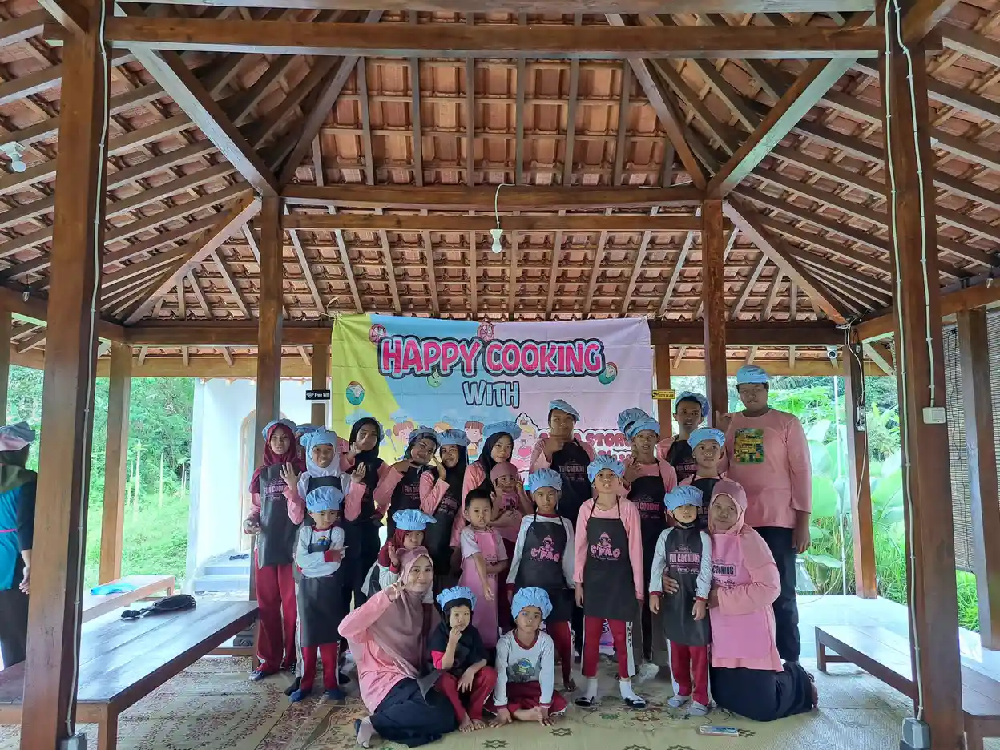
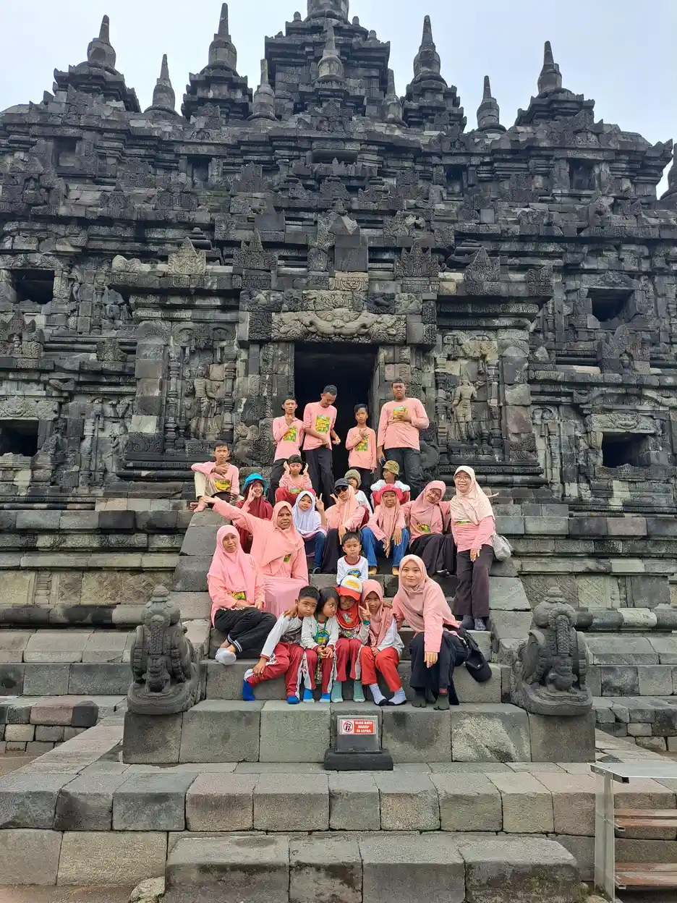
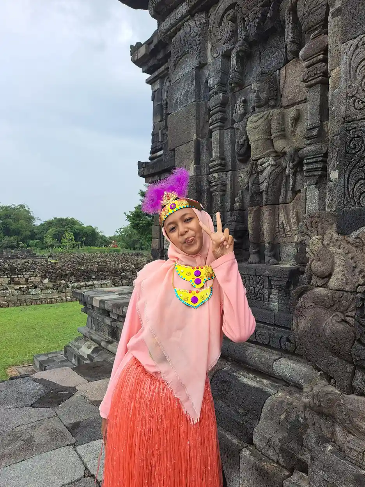

Prebiotik dan probiotik untuk gut brain axis anak autis merupakan topik penelitian, bukan terapi yang terbukti menyembuhkan autisme. Sejumlah studi menilai kemungkinan manfaat bagi keluhan pencernaan, tetapi hasil untuk karakteristik autisme belum konsisten. Prioritas keluarga adalah memenuhi kebutuhan gizi, mengenali nyeri atau gangguan buang air besar, dan membuat keputusan bersama dokter anak.
Orang tua wajar berharap anak lebih nyaman saat makan, bermain, dan belajar. Namun, istilah ilmiah yang terdengar meyakinkan dapat berubah menjadi promosi berlebihan ketika kemungkinan biologis dianggap sama dengan keberhasilan terapi. Panduan ini membantu memisahkan keduanya agar perhatian dan biaya keluarga diarahkan pada kebutuhan anak yang nyata.
Daftar Isi
- Memahami prebiotik, probiotik, dan sinbiotik
- Gut brain axis: hubungan biologis bukan janji terapi
- Keluhan pencernaan berbeda dari karakteristik autisme
- Apa yang dikatakan tinjauan penelitian terbaru?
- Mengapa strain dan rancangan studi penting?
- Tabel bukti dan keputusan aman untuk keluarga
- Memperluas pangan tanpa diet pembatasan sembarangan
- Menyesuaikan langkah dengan kemampuan makan anak
- Keamanan suplemen dan batas eksperimen di rumah
- Menyiapkan konsultasi dan catatan yang berguna
- Tanda bahaya yang tidak boleh ditunda
- Menjaga dukungan anak tetap menyeluruh
- Pertanyaan Umum tentang Prebiotik dan Probiotik
Memahami prebiotik, probiotik, dan sinbiotik
Menurut NCCIH, bagian dari NIH, probiotik adalah mikroorganisme hidup yang dimaksudkan memberi manfaat kesehatan. Istilah ini tidak berarti semua bakteri baik dapat dipertukarkan. Manfaat harus dikaitkan dengan mikroorganisme dan kondisi yang diteliti, bukan sekadar tulisan besar pada kemasan.
Prebiotik berbeda: yang dimanfaatkan adalah komponen makanan tertentu, bukan mikroorganisme hidupnya. Komponen tersebut mendukung pertumbuhan atau aktivitas mikroorganisme tertentu. Serat merupakan bagian penting dari pembahasan pangan, tetapi tidak setiap serat otomatis memenuhi pengertian prebiotik. Karena itu, kalimat bahwa semua makanan berserat merupakan obat untuk hubungan usus dan otak perlu dihindari.
Sinbiotik menggabungkan probiotik dengan prebiotik. Gabungan tersebut juga bukan jaminan bahwa manfaatnya lebih besar untuk setiap anak. Produk campuran perlu dinilai sebagai formulasi tertentu. Menambahkan banyak bahan tidak otomatis menghasilkan bukti klinis yang lebih kuat.
Dalam keluarga, pembicaraan sebaiknya dimulai dengan pertanyaan sederhana: apakah yang sedang dibutuhkan adalah variasi makanan, evaluasi sembelit, atau pertimbangan intervensi untuk kondisi tertentu? Memahami autisme sebagai kondisi perkembangan saraf membantu agar keputusan pangan tidak berubah menjadi upaya menghapus identitas atau cara berkomunikasi anak.
Gut brain axis: hubungan biologis bukan janji terapi
Gut brain axis adalah komunikasi dua arah antara saluran cerna dan otak. Sistem saraf, respons imun, sinyal hormonal, serta zat yang dihasilkan mikroorganisme usus menjadi bagian dari jalur yang dipelajari. Komunikasi ini membantu menjelaskan mengapa pengalaman emosional dan kenyamanan pencernaan dapat saling berkaitan. Hubungan tersebut bukan penemuan bahwa seluruh perilaku anak berasal dari usus.
Penelitian dapat menemukan perbedaan mikrobiota antara kelompok anak. Namun, perbedaan itu belum menjawab apakah mikrobiota merupakan penyebab, akibat, atau bagian dari hubungan yang lebih rumit. Pilihan makanan, obat, lingkungan, usia, dan keluhan pencernaan dapat memengaruhi hasil. Pola makan yang sangat selektif juga dapat ikut membentuk mikrobiota, bukan hanya sebaliknya.
Hasil dari hewan percobaan membantu membangun hipotesis, tetapi tidak dapat langsung menjadi anjuran membeli suplemen untuk anak. Keberhasilan pada laboratorium harus dilanjutkan dengan penelitian manusia yang sesuai, pengukuran manfaat bermakna, dan penilaian keamanan. Perubahan hasil pemeriksaan mikrobiota belum tentu berarti anak lebih nyaman atau lebih mampu berpartisipasi.
Baca pembahasan pendamping tentang penelitian gut microbiome dan autisme sebagai konteks, bukan alasan mendiagnosis sendiri kondisi usus. Pemeriksaan perkembangan dan keluhan medis tetap memerlukan tenaga profesional yang berwenang.

Keluhan pencernaan berbeda dari karakteristik autisme
Sembelit, diare, kembung, dan nyeri perut merupakan masalah kesehatan yang perlu diperhatikan pada anak, termasuk anak autis. Keluhan tersebut tidak boleh dianggap tidak penting hanya karena anak mempunyai kebutuhan perkembangan tertentu. Sebaliknya, keberadaan autisme tidak berarti setiap anak pasti memiliki gangguan pencernaan atau memerlukan perbaikan mikrobiota.
Anak yang kesulitan menjelaskan rasa sakit mungkin menunjukkan perubahan aktivitas, menolak makan, menahan buang air besar, atau tampak lebih mudah terganggu. Tanda tersebut tidak membuktikan satu diagnosis tertentu, tetapi dapat menjadi alasan untuk menanyakan kondisi tubuhnya. Catat apa yang berubah dibanding kebiasaan anak, bukan hanya menilai apakah anak lebih patuh.
Jika sembelit teratasi lalu anak lebih nyaman mengikuti kegiatan, perbaikan itu berharga. Namun, menyebutnya sebagai hilangnya autisme merupakan kesimpulan yang berbeda dan tidak dapat ditarik begitu saja. Tujuan perawatan pencernaan adalah mengurangi keluhan, mendukung kesehatan, dan memperbaiki kualitas hidup, bukan membuktikan bahwa karakteristik perkembangan anak berasal dari satu penyebab.
Pendamping dapat memakai alat komunikasi alternatif dan augmentatif untuk membantu anak menyampaikan tidak nyaman. Perubahan perilaku juga perlu dibaca bersama kebutuhan sensori, lingkungan, dan komunikasi, sebagaimana dibahas dalam tips mendampingi anak autis.
Apa yang dikatakan tinjauan penelitian terbaru?
Tinjauan sistematis Kotowska dan rekan pada 2024 menyimpulkan bahwa data yang tersedia belum memberikan bukti berkualitas tinggi untuk mendukung penggunaan probiotik bagi gejala autisme pada anak. Ada sinyal manfaat pada sebagian analisis, tetapi risiko bias dan perbedaan studi membatasi keyakinan terhadap kesimpulan.
Tinjauan lain pada Child and Adolescent Psychiatry and Mental Health tahun 2024 menemukan hasil pada skor keseluruhan tertentu, tetapi tidak menemukan perbaikan yang meyakinkan pada karakteristik inti yang dianalisis, termasuk komunikasi dan perilaku berulang. Skor gabungan tidak boleh dipromosikan sebagai bukti bahwa seluruh kemampuan anak akan berubah.
Umbrella review tahun 2025 di Microorganisms menilai kualitas metodologis tinjauan yang tersedia rendah hingga sangat rendah. Ini bukan berarti semua penelitian tidak berguna. Artinya, banyak ulasan tentang topik yang sama belum otomatis menghasilkan kepastian lebih tinggi bila penelitian dasarnya terbatas atau cara mengulasnya kurang kuat.
Kesimpulan yang proporsional adalah bahwa kemungkinan manfaat masih perlu diteliti, terutama dengan memisahkan keluhan pencernaan dari hasil perkembangan. Bukti prebiotik juga tidak dapat dianggap setara dengan bukti probiotik. Keluarga tidak perlu menunggu penelitian selesai untuk mencari bantuan atas nyeri, sembelit, atau kesulitan makan yang sedang terjadi.
Mengapa strain dan rancangan studi penting?
Strain merupakan identitas yang lebih spesifik daripada kelompok atau spesies mikroorganisme. Dua produk dengan nama kelompok bakteri serupa dapat berbeda strain, jumlah mikroorganisme hidup, bahan tambahan, dan cara penyimpanan. NCCIH menegaskan bahwa manfaat dari satu jenis probiotik tidak otomatis berlaku bagi jenis lain. Nama yang mirip bukan bukti bahwa hasil penelitiannya sama.
Dalam penelitian autisme, peserta juga tidak selalu mempunyai kondisi awal yang sama. Ada studi yang melibatkan anak dengan keluhan pencernaan, ada yang menilai kelompok lebih luas. Sebagian menggunakan campuran bahan atau intervensi lain. Bila beberapa hal berubah bersamaan, sulit mengetahui bagian mana yang berkaitan dengan perubahan hasil.
Penelitian yang membandingkan kelompok secara acak dan menggunakan pembanding membantu mengurangi bias, tetapi tetap perlu menilai cara pengukuran, peserta yang keluar dari studi, dan lama pemantauan. Laporan orang tua penting, namun dapat dipengaruhi harapan bila keluarga mengetahui produk yang diberikan. Keamanan jangka panjang juga tidak dapat disimpulkan dari pemantauan singkat.
Karena itu, artikel ini tidak menyebut merek, tidak menetapkan dosis, dan tidak memilih strain sebagai terapi autisme. Pertanyaan yang lebih berguna kepada dokter adalah apakah ada bukti untuk keluhan khusus anak dan apakah manfaat yang diharapkan sepadan dengan risiko serta biaya. Pendekatan tersebut selaras dengan penilaian kritis pada tinjauan intervensi dini autisme.
Tabel bukti dan keputusan aman untuk keluarga
Tabel berikut bukan protokol pengobatan. Fungsinya adalah membandingkan jenis klaim dengan langkah yang lebih aman. Temuan positif dalam satu penelitian tidak boleh dipindahkan langsung ke produk lain atau digunakan untuk mengabaikan penyebab nyeri yang memerlukan pemeriksaan.
| Pertanyaan atau pilihan | Posisi bukti | Keputusan yang mengutamakan keselamatan |
|---|---|---|
| Probiotik untuk menyembuhkan autisme | Tidak didukung bukti berkualitas tinggi; hipotesis mikrobiota bukan bukti penyembuhan. | Jangan mengganti layanan perkembangan atau pendidikan dengan suplemen. |
| Probiotik untuk keluhan pencernaan tertentu | Hasil bergantung kondisi, strain, dan penelitian; manfaat tidak seragam. | Dokter menilai penyebab keluhan dan pilihan perawatan terlebih dahulu. |
| Suplemen prebiotik atau sinbiotik | Penelitian pada autisme masih terbatas dan formulasi berbeda. | Jangan menganggap campuran bahan pasti lebih efektif atau lebih aman. |
| Variasi pangan dan sumber serat | Penting untuk kecukupan gizi umum, bukan terapi yang menghilangkan autisme. | Perluas bertahap, sesuaikan tekstur, alergi, cairan, dan toleransi. |
| Diet eliminasi tanpa indikasi | Diagnosis autisme tidak otomatis menjadi alasan menghindari seluruh kelompok pangan. | Bahas kebutuhan pembatasan dan pengganti zat gizi bersama profesional. |
| Suplemen pada anak berisiko tinggi | Risiko efek serius lebih besar pada kondisi medis tertentu. | Jangan memulai sendiri; perlukan pertimbangan dan pemantauan dokter. |
Gunakan tabel untuk menyusun tujuan yang dapat diamati, misalnya kenyamanan buang air besar atau kecukupan asupan. Hindari target kabur seperti memperbaiki seluruh otak melalui usus. Ketika tujuan lebih jelas, keluarga dan dokter dapat mengevaluasi kemajuan tanpa menyalahkan anak bila hasil tidak sesuai harapan.

Memperluas pangan tanpa diet pembatasan sembarangan
Kebutuhan gizi anak autis pada dasarnya tetap mencakup energi, protein, lemak, vitamin, mineral, serta cairan yang sesuai tahap pertumbuhan. Materi American Academy of Pediatrics yang tersedia melalui CPCMG mengingatkan bahwa pilihan makanan sangat terbatas atau diet khusus dapat menimbulkan kekurangan zat gizi. Menghapus kelompok makanan tanpa pengganti bukan langkah ringan.
Sumber serat dapat diperoleh dari variasi buah, sayuran, kacang yang disiapkan aman, dan pangan berbahan biji-bijian. Pilihan bentuk perlu menyesuaikan kemampuan anak, misalnya tekstur lebih lunak bagi anak yang membutuhkannya. Tujuannya memperluas kecukupan pangan, bukan mengejar daftar makanan ajaib untuk bakteri tertentu.
Untuk makanan fermentasi, jangan berasumsi bahwa semuanya mengandung mikroorganisme hidup saat dikonsumsi atau memiliki bukti klinis sebagai probiotik. Proses pemanasan dan penyimpanan dapat membedakan produk. Pilih pangan yang diproses secara higienis, sesuai usia, dan tidak bertentangan dengan riwayat alergi atau kondisi medis anak. Susu yang tidak dipasteurisasi bukan pilihan aman untuk percobaan kesehatan anak.
Bila ada dugaan alergi, penyakit seliak, atau masalah lain, dokter akan menilai kebutuhan pemeriksaan dan pembatasan yang tepat. Keluarga tidak perlu memulai diet bebas banyak bahan hanya karena melihat testimoni. Pembahasan gangguan makan pada anak berkebutuhan khusus dapat membantu mengenali kapan bantuan lebih terstruktur diperlukan.
Menyesuaikan langkah dengan kemampuan makan anak
Penolakan makanan dapat berkaitan dengan tekstur, aroma, rasa, pengalaman nyeri, keterampilan mengunyah, atau suasana makan. Menyebut anak keras kepala dapat menutupi penyebab yang sebenarnya. Jika anak batuk saat makan, sering tersedak, menyimpan makanan di mulut, atau kehilangan kemampuan makan yang sebelumnya dikuasai, mintalah penilaian profesional, bukan sekadar menambah suplemen.
Mulailah dari makanan yang sudah diterima anak dan pertahankan rasa aman. Perkenalan pangan baru boleh berupa melihat, menyentuh, atau mengenal aroma tanpa tuntutan segera menelan. Jangan menyembunyikan perubahan besar dalam makanan andalan karena dapat membuat anak kehilangan kepercayaan dan makin membatasi pilihan. Hargai cara anak menyampaikan cukup atau tidak nyaman.
Konsistensi antara rumah dan sekolah membantu mengurangi kebingungan. Catatan singkat tentang tekstur yang diterima, posisi duduk yang nyaman, dan tanda kelelahan dapat dibagikan seperlunya kepada pendamping. Gunakan jadwal visual bila membantu anak memahami urutan kegiatan, tanpa menjadikannya tuntutan kaku.
Orang tua juga dapat membaca pendampingan picky eater dan kebutuhan sensori. Keduanya merupakan konteks pendampingan, bukan pengganti asesmen medis dan keterampilan makan. Kemajuan yang bermakna bisa berupa suasana makan lebih tenang, komunikasi kebutuhan lebih jelas, atau bertambahnya pilihan pangan secara aman.

Keamanan suplemen dan batas eksperimen di rumah
Probiotik bukan selalu tanpa risiko hanya karena mengandung mikroorganisme yang dipasarkan sebagai bermanfaat. NCCIH menjelaskan bahwa risiko efek merugikan lebih besar pada orang dengan penyakit berat atau gangguan sistem imun. Keluhan ringan seperti kembung juga dapat muncul, sementara data keamanan jangka panjang masih terbatas. Riwayat kondisi anak harus menjadi bagian keputusan.
Sebelum mempertimbangkan suplemen, beri tahu dokter tentang penyakit penyerta, rawat inap, obat, alergi, dan seluruh produk yang sedang digunakan. Jangan menambah beberapa produk sekaligus atau menaikkan penggunaan berdasarkan saran komunitas. Jika muncul keluhan setelah penggunaan, hubungi tenaga kesehatan dan ikuti arahan penanganannya; jangan menganggapnya sebagai proses pembersihan racun yang harus diteruskan.
Perhatikan identitas produk, komposisi lengkap, petunjuk penyimpanan, dan masa kedaluwarsa. Informasi kemasan membantu mengenali produk, tetapi tidak membuktikan klaim untuk autisme. Legalitas pemasaran juga bukan sama dengan bukti bahwa produk dapat memperbaiki komunikasi atau menghilangkan kebutuhan dukungan anak. Artikel ini tidak memberikan dukungan komersial kepada produk apa pun.
Hindari pembuatan campuran mikroorganisme sendiri atau prosedur pemindahan mikrobiota di rumah. Jangan menghentikan obat yang diresepkan, bantuan komunikasi, maupun layanan lain demi menguji gagasan gut brain axis. Bila biaya menjadi pertimbangan, bicarakan prioritas perawatan agar kebutuhan dasar dan layanan yang sudah bermanfaat tidak tergeser oleh janji pemasaran.
Menyiapkan konsultasi dan catatan yang berguna
Konsultasi akan lebih terarah bila keluarga membawa gambaran keseharian anak. Catat jenis keluhan, kapan mulai terjadi, frekuensi buang air besar, tampilan tinja secara umum, makanan yang diterima, asupan minum, dan perubahan yang menimbulkan kekhawatiran. Tidak perlu membuat pengamatan menjadi beban atau menunda kunjungan hanya karena catatan belum lengkap.
Pisahkan pengamatan dari dugaan. Kalimat anak menolak duduk setelah makan lebih informatif daripada kesimpulan bakterinya buruk. Catat juga perubahan obat, penyakit yang baru dialami, dan rutinitas harian. Dokter dapat menilai apakah diperlukan pemeriksaan lanjutan atau rujukan ke dokter anak konsultan gastrohepatologi, dietisien, tenaga gizi, atau tim keterampilan makan.
Pertanyaan yang dapat diajukan antara lain: keluhan apa yang paling mungkin terjadi, bagaimana menilai pertumbuhan, apakah pilihan makan sudah mencukupi, dan kapan harus kembali lebih cepat? Bila probiotik sedang dipertimbangkan, tanyakan tujuan spesifik, mutu bukti untuk kondisi tersebut, risiko, serta cara menilai apakah ada manfaat. Keputusan tidak harus berakhir dengan pembelian produk.
Pastikan sekolah mengetahui kebutuhan praktis yang relevan, misalnya akses minum dan toilet, tanpa menyebarkan informasi medis lebih luas dari yang diperlukan. Untuk informasi layanan pendidikan YUKA, lihat program pendampingan atau hubungi YUKA. Jalur tersebut bukan layanan konsultasi gizi atau pemberian resep medis.
Tanda bahaya yang tidak boleh ditunda
Jangan menunggu respons makanan atau suplemen jika anak menunjukkan tanda sakit serius. Nyeri perut berat atau semakin memburuk, muntah hijau, muntah darah, darah pada tinja, perut sangat membesar, atau anak tampak sangat lemas memerlukan pertolongan medis segera. Sulit minum dan tanda dehidrasi seperti berkemih jauh lebih sedikit juga perlu penanganan cepat.
Penurunan berat badan, pertumbuhan yang melambat, muntah berulang, diare menetap, dan sembelit yang terus mengganggu memerlukan evaluasi dokter meski tidak tampak sebagai kegawatan saat itu. Keluhan berulang bukan alasan untuk mencoba produk tanpa batas. Dokter perlu menilai riwayat dan memeriksa anak untuk menentukan urgensi serta kemungkinan penyebab.
Perubahan perilaku mendadak dapat menjadi satu-satunya petunjuk ketidaknyamanan pada anak yang belum mudah menjelaskan sensasi tubuh. Periksa keadaan umum anak dan tawarkan sarana komunikasi yang biasa dipakai. Jangan menganggap tangisan, penolakan, atau kesulitan mengikuti kegiatan sebagai persoalan perilaku semata sebelum mempertimbangkan nyeri dan kebutuhan dasar.
Saat mencari pertolongan, bawa informasi obat dan suplemen yang digunakan serta waktu keluhan muncul. Jika anak memiliki rencana perawatan khusus dari dokter, ikuti rencana tersebut. Daftar ini tidak mencakup semua keadaan darurat; bila keluarga merasa anak sakit berat atau keselamatannya terancam, cari layanan kegawatdaruratan setempat tanpa menunda.

Menjaga dukungan anak tetap menyeluruh
Riset tentang usus memberi peluang memahami kesehatan dengan lebih baik, tetapi tidak menggantikan kebutuhan anak akan hubungan yang aman, lingkungan aksesibel, komunikasi, dan kesempatan belajar. WHO menekankan dukungan berbasis bukti serta layanan yang terintegrasi sesuai kebutuhan dan preferensi individu. Keberhasilan pendampingan tidak diukur dari hilangnya seluruh perbedaan anak.
Keluarga dapat menata prioritas mulai dari keluhan yang paling mengganggu. Jika ada nyeri, cari penyebab dan penanganannya. Jika asupan sangat terbatas, mintalah penilaian gizi dan keterampilan makan. Jika komunikasi kebutuhan belum mudah, perkuat sarana komunikasi. Suplemen, bila memang dipertimbangkan dokter untuk kondisi tertentu, tidak seharusnya mengambil alih seluruh rencana dukungan.
YUKA mendukung pendidikan inklusi dan pendampingan yang menghormati martabat setiap anak. Dokumentasi dalam artikel ini menunjukkan kegiatan bersama, bukan kisah keberhasilan terapi diet. Tidak ada diagnosis peserta foto yang disimpulkan. Kunjungi profil YUKA dan galeri kegiatan untuk mengenal konteks organisasi.
Kesimpulannya: pahami gut brain axis sebagai bidang penelitian yang berkembang, pisahkan manfaat pencernaan dari klaim tentang autisme, perluas pangan dengan aman, dan konsultasikan keluhan serta rencana suplemen kepada dokter anak. Untuk membantu akses pendidikan, dukungan dapat disalurkan melalui donasi pendidikan YUKA, tanpa dikaitkan dengan janji hasil medis tertentu.
Pertanyaan Umum tentang Prebiotik dan Probiotik
Apakah probiotik dapat menyembuhkan autisme pada anak?
Tidak ada bukti berkualitas tinggi yang mendukung probiotik sebagai penyembuh autisme. Autisme adalah kondisi perkembangan saraf, bukan diagnosis yang ditentukan oleh kekurangan satu bakteri. Penelitian mikrobiota masih menyisakan ketidakpastian. Jika anak mengalami keluhan pencernaan, evaluasi keluhan tersebut bersama dokter tanpa menghentikan dukungan komunikasi, pendidikan, atau layanan perkembangan yang dibutuhkan anak.
Apa perbedaan prebiotik dan probiotik untuk anak?
Prebiotik adalah komponen makanan yang dimanfaatkan secara selektif oleh mikroorganisme tertentu, sedangkan probiotik adalah mikroorganisme hidup yang memberikan manfaat kesehatan ketika digunakan dalam jumlah yang sesuai. Keduanya tidak saling menggantikan. Makanan berserat bukan otomatis terapi prebiotik untuk autisme, dan makanan fermentasi tidak otomatis memiliki bukti manfaat yang sama dengan strain probiotik yang diteliti.
Apakah semua anak autis perlu suplemen probiotik?
Tidak. Diagnosis autisme saja bukan alasan untuk mewajibkan suplemen probiotik. Pertimbangan sebaiknya dimulai dari keluhan yang jelas, pola makan, pertumbuhan, penyakit penyerta, dan penilaian dokter anak. Anak tanpa keluhan pencernaan tidak perlu dianggap memiliki usus bermasalah hanya karena diagnosisnya. Tidak ada produk atau dosis universal yang direkomendasikan artikel ini.
Apakah yogurt dapat menggantikan probiotik dalam penelitian?
Tidak dapat diasumsikan demikian. Jenis mikroorganisme, strain, jumlah yang masih hidup, penyimpanan, serta tujuan penggunaan dapat berbeda. Yogurt boleh dipertimbangkan sebagai makanan jika sesuai usia, kemampuan makan, dan riwayat alergi anak, bukan sebagai terapi autisme. Pilih produk pangan yang aman dan hindari bahan susu yang tidak dipasteurisasi. Konsultasikan bila ada pembatasan makanan.
Bolehkah anak langsung diberi banyak serat agar mikrobiotanya membaik?
Jangan melakukan perubahan besar secara mendadak. Penambahan serat yang terlalu cepat dapat menimbulkan ketidaknyamanan seperti kembung pada sebagian anak. Perluas variasi makanan secara bertahap, pertahankan makanan yang diterima anak, serta perhatikan kebutuhan cairan dan kemampuan mengunyah. Bila pilihan makanan sangat terbatas, mintalah penilaian dokter dan dietisien atau tenaga gizi.
Kapan probiotik perlu dibicarakan lebih dahulu dengan dokter?
Sebelum memulai suplemen pada anak, terutama bila anak memiliki gangguan imunitas, sedang sakit berat, menjalani perawatan kompleks, atau menggunakan beberapa obat. Risiko probiotik tidak sama pada setiap orang. Dokter perlu mengetahui seluruh obat, suplemen, alergi, dan gejala anak. Hindari mencoba beberapa produk sekaligus karena manfaat maupun efek sampingnya menjadi sulit dinilai.
Tanda apa yang memerlukan pertolongan medis segera?
Cari pertolongan segera bila ada nyeri perut berat atau memburuk, muntah hijau atau berdarah, darah pada tinja, perut sangat membesar, sulit minum, tanda dehidrasi, atau anak tampak sangat lemas. Penurunan berat badan dan gangguan pertumbuhan juga perlu evaluasi dokter. Jangan menunggu efek probiotik atau menganggap semua perubahan perilaku merupakan bagian dari autisme.
Bacaan Terkait
Sumber dan Referensi
- NIH/NCCIH: Probiotics, Usefulness and Safety
- WHO: Autism, dukungan dan layanan terintegrasi
- NIH/NIDDK: Gejala sembelit anak dan tanda yang memerlukan evaluasi segera
- AAP: Nutrition and Eating Problems, materi berhak cipta AAP 2020 yang diterbitkan CPCMG
- Kotowska dkk. (2024): Systematic review dan meta-analysis probiotik serta gejala inti autisme
- Tinjauan sistematis dan meta-analysis (2024), Child and Adolescent Psychiatry and Mental Health
- Umbrella review (2025): Critical Appraisal of Systematic Reviews, Microorganisms
- Interventions on Microbiota (2022): tinjauan sistematis hubungan usus dan otak pada autisme
Catatan: Artikel ini bersifat edukasi umum dan bukan pengganti konsultasi dengan psikolog, tenaga kesehatan, atau petugas layanan sosial resmi. Sumber diperiksa pada 15 Oktober 2026. Status tinjauan medis: belum ditinjau oleh dokter berlisensi. Tidak ada dosis, rekomendasi produk, atau klaim penyembuhan dalam panduan ini.